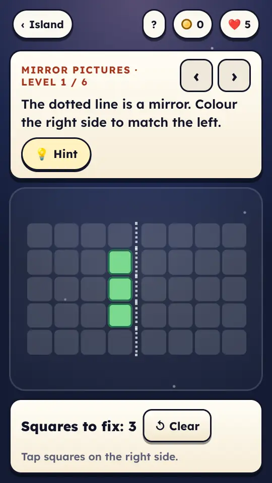

All labs › Maths › Mirror Pictures
Maths lab · Gauri's Garden
Mirror Pictures
दर्पण चित्र · दूसरा आधा हिस्सा बनाओ
Colour squares on one side of a mirror line so the picture matches the other side, like a reflection.
- Maths
- Tinkerer · ages 7–10
- 6 levels
- English · हिंदी
- Free, no sign-up

How it works
Mirror pictures
- The dotted line is a mirror. The left side is already coloured.
- Colour the right side so it looks like the left in a mirror.
- Each coloured square on the left needs a partner the same distance from the line.
Stuck? Every level has a hint, and a "Show me" walk-through.
Why it works
The big idea
Put a mirror on the dotted line: the coloured side should appear on the other side, each square the same distance from the line, just flipped.
What children learn
Skills in this lab
- Lines of symmetry
- Reflections and mirror images
- Counting distance from a line
For parents and teachers
This lab is in the Tinkerer band (ages 7–10). Each player picks a band, and sees only the labs made for it.
Curio Island is free in the browser with no sign-up. Progress is saved on this device only. Ads are child-safe and non-personalised, and never appear inside a lab.
Part of Gauri's Garden on the island. 6 levels to finish.